土曜日の便り。老朽化し軌道を落とし続けていたNASAのSwift宇宙望遠鏡を救うため、伝説の空中発射ロケット「ペガサス」が最後の飛行に飛び立った。捕獲衛星LINKが約1ヶ月後にランデブーし高度を150マイル押し上げれば、9月には観測が再開する見込みだ。同じ週、中国の天問2号は小惑星カモオアレワへ本日最接近し、日本のはやぶさ2も明日、史上屈指の超近接フライバイに挑む。地上ではエボラとマールブルグという2種のフィロウイルスが同じ土地で監視対象となり、H5N1は史上初めて7大陸すべてに到達した。空を見上げる理由と、地に足をつける理由が、同じ朝に並んでいる。
2004年打ち上げのSwift宇宙望遠鏡は近年の太陽活動の影響で軌道降下が加速し、大気圏突入の危機にあった。NASAは7月3日、Katalyst Space Technologies製の捕獲衛星「LINK」を、史上最後となるペガサスXLロケットで打ち上げることに成功した。LINKは約1ヶ月後にSwiftへランデブーし、高度を150マイル押し上げる予定で、順調にいけば9月には観測再開の見込みだ。空中発射という一時代を築いたロケットの最後の使命が、老朽衛星の延命という形で結実する。同じ週、中国の天問2号は本日、月の破片である可能性が指摘される小惑星カモオアレワへ最接近して本格観測を開始し、日本のはやぶさ2も明日7月5日、小惑星トリフネへ距離約1km・秒速5.3kmという史上屈指の超近接フライバイに挑む。天文ミッションが同時多発する、稀な一週間となった。
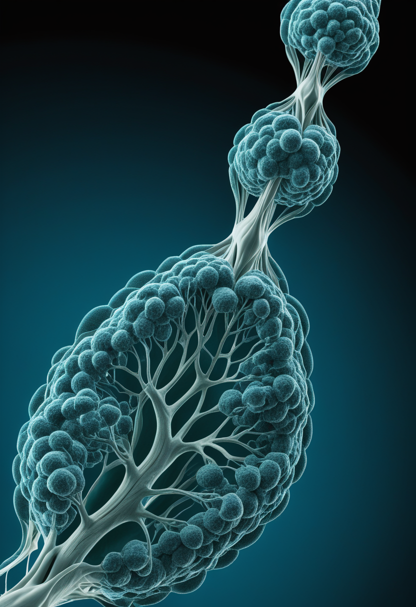
Scholar Rock社の抗ミオスタチン抗体アピテグロマブは、2025年の完了審査通知（CRL）を経て今年3月に生物製剤承認申請（BLA）を再提出した。第2の米国内充填拠点を追加して供給体制を強化し、FDAは優先審査を継続、PDUFA（審査完了目標日）は9月30日で維持されている。SAPPHIRE試験は「神経を守る」既存治療に「筋肉量を取り戻す」効果を上乗せする初のデータとして注目される。
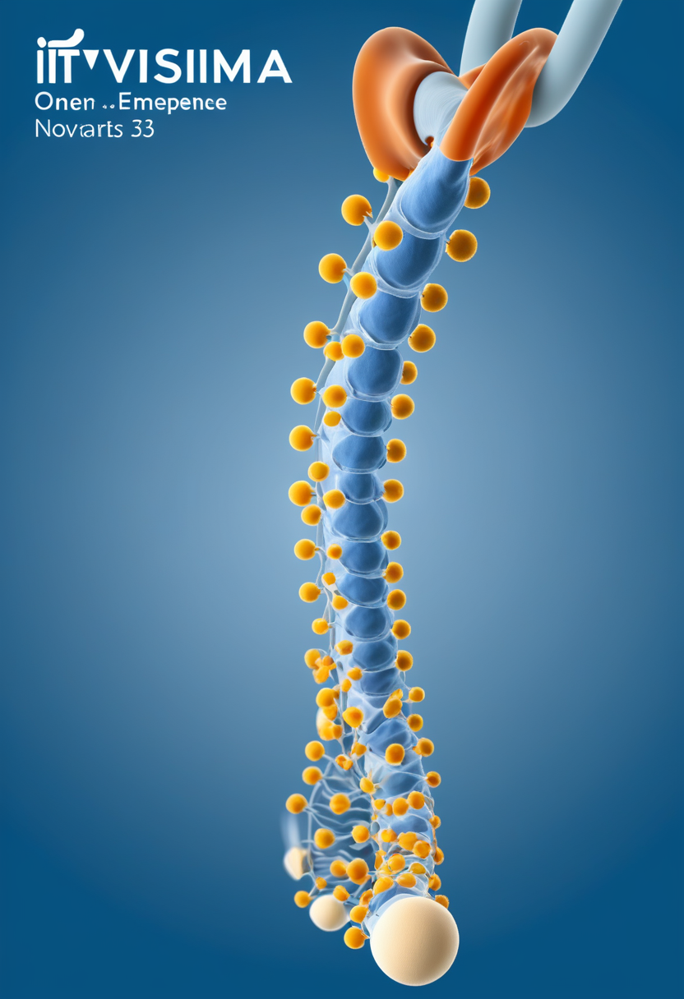
Novartisの遺伝子治療薬Itvismaは6月のCHMP肯定的意見を経て欧州委員会（EC）の正式承認を取得した。後期発症型SMA患者を対象としたSTEER試験では、52週時点でHFMSE（Hammersmith機能運動評価拡大版）スコアがプラセボ対照群に対し2.39点の統計的有意な改善を示し、MDA2026年次会議で発表された64週時点の追跡データでも上肢機能スコア（RULM）を含め効果の持続と新たな安全性シグナルなしが確認された。
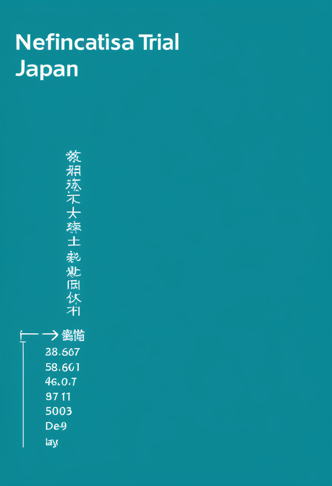
日本マススクリーニング学会は5月25日時点で、原発性免疫不全症（SCID）とSMAを対象に加えた拡大スクリーニングの実施状況を更新した。こども家庭庁は2023年11月にSMAを新生児マススクリーニングに加える方針を決定しており、全国一律の公費実施はまだ先だが、生後4〜6日の血液検査でSMN1遺伝子欠失を調べ、陽性なら約5日以内に専門医療機関へ紹介する体制の都道府県別の試行が広がっている。
アピテグロマブ・Itvismaとも2026年後半の重要マイルストーンを控え、SMA治療は「第1世代（SMN補充）」から「第2世代（筋肉再建・利便性向上）」への移行期にある。日本は新生児スクリーニングの都道府県単位の実証が進むが、全国義務化はなお最重要の政策課題として残る。
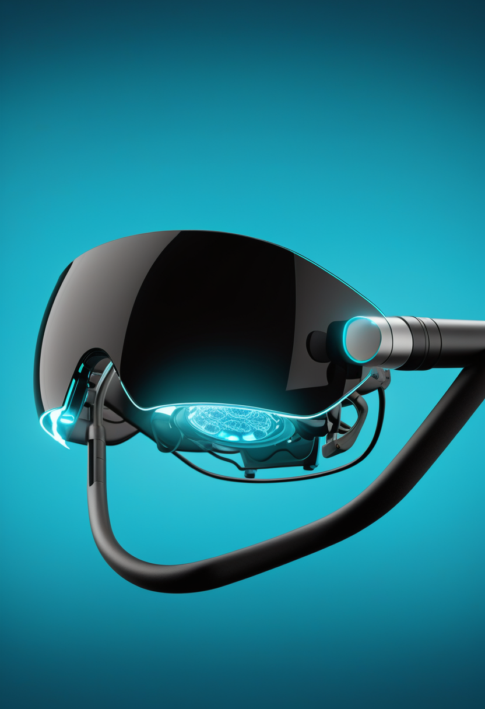
Neuralinkは4月に約6.5億ドルのシリーズEを調達し、創業以来の累計調達額は約18.5億ドルに達したと報じられている。カナダ・英国での治験（CAN-PRIME、CONVOYトライアル）を拡大する一方、完全失明患者向けに視覚野へ人工光視を届ける次世代デバイス「Blindsight」の開発にも着手した。
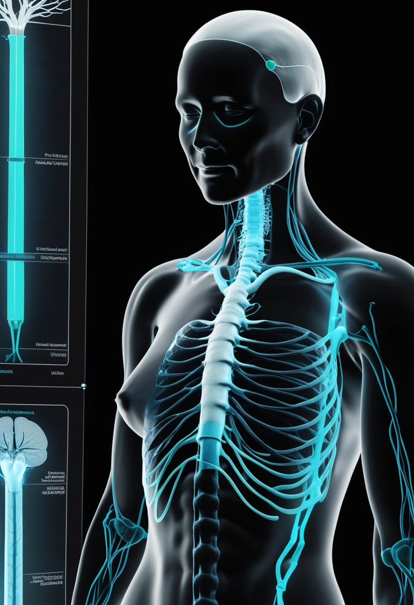
血管内アプローチのBCI「Stentrode」を開発するSynchronは、ALS患者中心だった治験対象を脳卒中など運動機能障害全般に広げるピボタル試験の準備段階に入ったと報じられている。対象患者数は従来の3〜4万人規模から25〜30万人規模へと大幅に拡大する見込みで、AppleのVision Pro・iPhone連携も継続中。
視線計測大手Tobiiは、専用ハードウェアなしで通常のウェブカメラを視線トラッカーに変える研究者向け新サービス「Webcam eye tracking for research」を発表した。まずはリモート研究向けのオンライン版として提供され、対面実施用のローカル版は2026年内に追加予定で、視線研究の裾野拡大を狙う。
BCI各社は「侵襲度を上げて解像度を取るか、非侵襲・低侵襲で対象患者を広げるか」で明確に路線分岐。Synchronの脳卒中への適応拡大は市場規模を桁違いに広げる転換点になり得る一方、Tobiiのウェブカメラ視線計測は視線研究への参入障壁を大きく下げる。
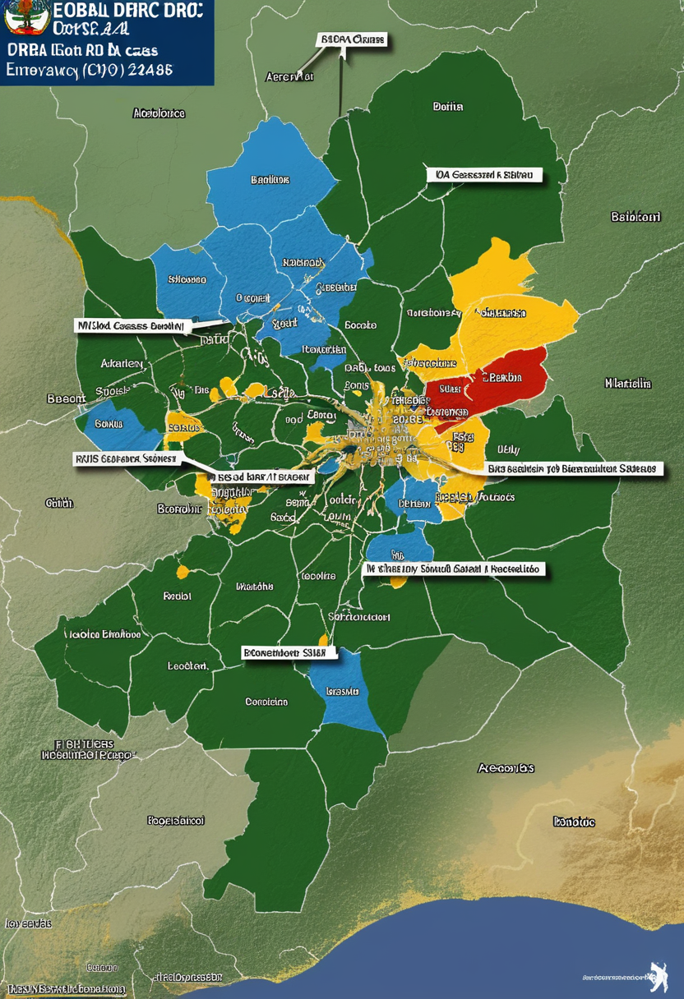
コンゴ民主共和国のエボラ（ブンディブギョ型）流行は7月2日時点で確認1,406例・死者438人に達し、直近2週間は1日平均38例のペースで増加が続く。最も深刻なイトゥリ州では36保健区中24区に拡大し1,283例・366死者を数え、治療病床は650床中およそ96％が埋まる逼迫状態にある。WHOはブンディブギョウイルス用の分子診断キットに初の緊急使用リスト入り（EUL）を与え、検査体制の強化を図った。
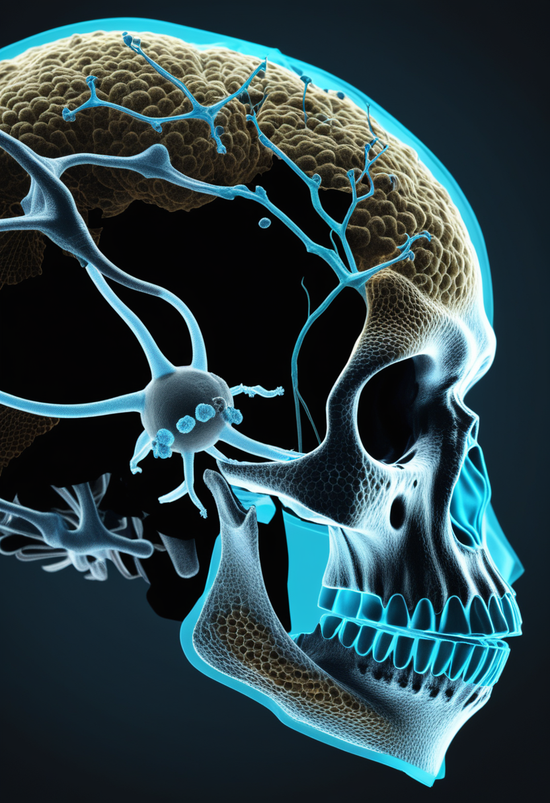
ウガンダ西部カイェゲゲワ県で1歳5ヶ月の乳児がマールブルグウイルス病で死亡し、WHOは6月30日に確認例として通知を受けた。接触者は現時点で全員無症状だが、STAT Newsは関係者の話として2例目の存在も報じており、Africa CDCは追加症例を未確認としている。エボラの流行地域と重なるため、2種のフィロウイルスが同時流行する前例のない事態への警戒が続く。
世界動物保健機関（WOAH）は6月20日、西オーストラリア州エスペランス近郊のケープ・ル・グラン国立公園で見つかった渡り鳥（トウゾクカモメ）から豪州初となる高病原性H5N1の検出を発表した。7月3日時点で確認例は西豪4件・南豪1件の計5件に拡大し、これによりH5N1の感染確認地域は史上初めて7大陸すべてに及んだことになる。現時点で家禽や野生生物への大量死は確認されていない。
アフリカでエボラとマールブルグという2種のフィロウイルスが同一地域で同時に監視対象となるのは記録上初めて。医療資源の分散と接触者追跡の複雑化が今後数週間の最大リスクとなる一方、H5N1は南極を除く全大陸への到達という別の地球規模の課題を突きつけている。
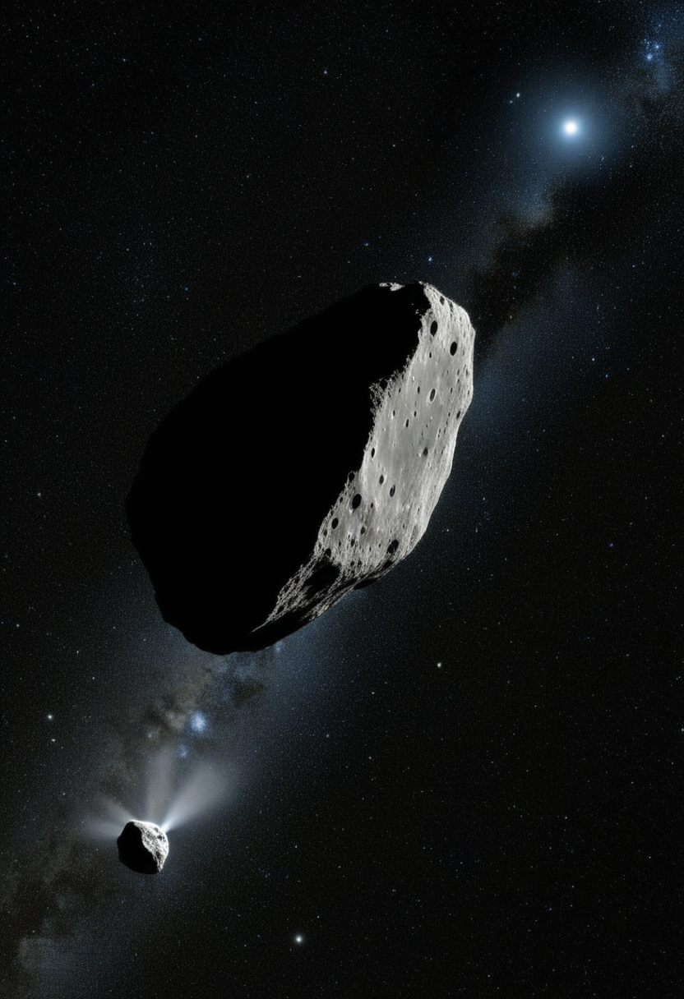
中国国家航天局（CNSA）の探査機・天問2号は6月7日にエンジン噴射で準衛星カモオアレワの軌道に入り、日本時間7月4日、距離約20kmまで接近して本格的な科学観測を開始する見込み。カモオアレワは月の破片である可能性が指摘されている天体で、2027年のサンプルリターンを目指す。奇しくも日本のはやぶさ2も7月5日、小惑星トリフネへ距離約1km・秒速5.3kmという史上屈指の超近接フライバイに挑む。
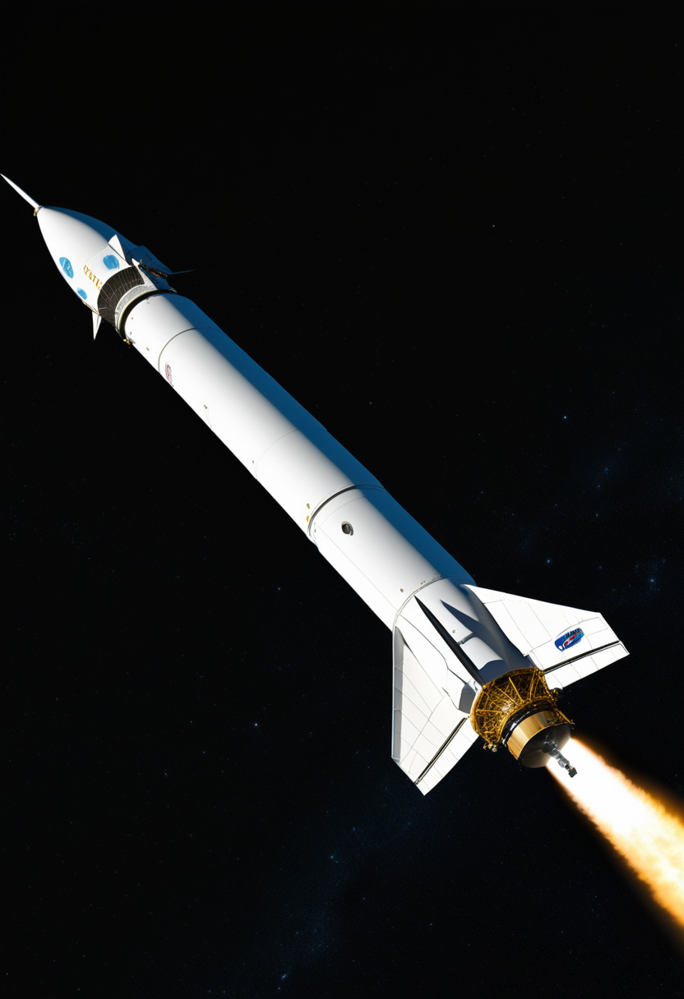
2004年打ち上げのSwift宇宙望遠鏡は近年の太陽活動の影響で軌道降下が加速し、大気圏突入の危機にあった。NASAは7月3日、Katalyst Space Technologies製の捕獲衛星「LINK」を史上最後となるペガサスXLロケットで打ち上げることに成功。LINKは約1ヶ月後にSwiftへランデブーし、高度を150マイル押し上げる予定で、順調にいけば9月には観測再開の見込み。
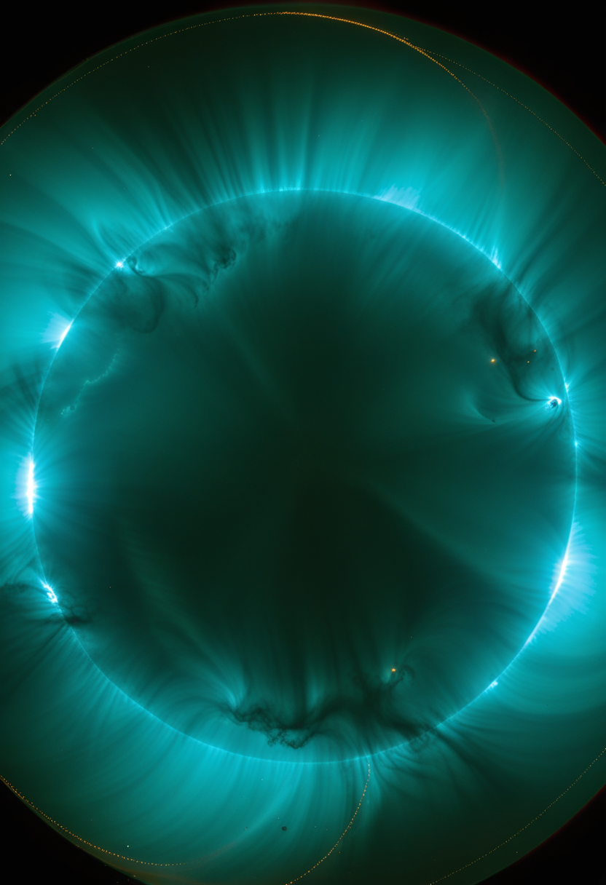
活動領域AR4479が6月30日に発生させたX1.1クラスの太陽フレアに伴うハローCME（コロナ質量放出）が、7月3日夜から4日にかけて地球に到達し、米NOAA宇宙天気予報センター（SWPC）はG2（中規模）磁気嵐ウォッチを発令した。同領域からは複数のCMEが連続して放出されており、7月6日にかけて段階的に地球へ到達する見込みで、低緯度でのオーロラ観測の可能性も指摘されている。
中国・日本の小惑星探査が48時間以内に同時進行するのは史上初。加えて太陽活動の高まりがSwift望遠鏡の軌道降下を早めた一因でもあり、宇宙天気と軌道インフラの相互依存が改めて浮き彫りになった一週間だった。
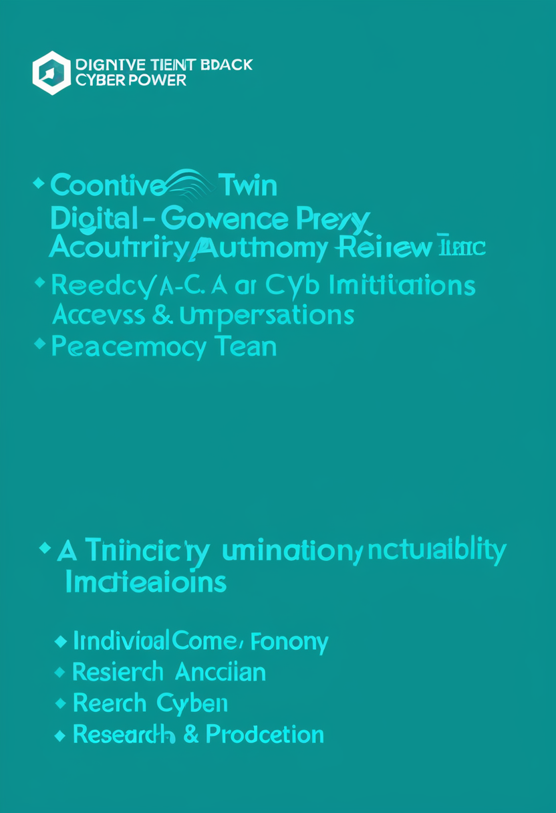
UAEのムハンマド・ビン・ザイド人工知能大学（MBZUAI）の研究チームは、個人の認知を模倣・予測・代理する「認知デジタルツイン（CDT）」がもたらす誤表象・シャドーツイン・代理権力の非対称性といった固有リスクを整理し、同意・目的限定・追跡可能性・異議申立て・モデル退役を含む「5A統治フレームワーク」（権限・自律性・アクセス管理・説明責任・可用性）を提案する論文を発表した（査読中）。
研究者らは、AIとの認知的統合が進む現状に対し、安全性・アライメントは外部システムの制御だけでは達成できず、人間とAIが形成する「共生的認知ユニット」全体の共同制御（co-regulation）から生まれるべきだと主張する提言論文を発表した。脱技能化・自動化バイアス・認識的権威の移転・オラクル的な知の中央集権化といったリスクを具体的に指摘している。
ハード面（Neuralink Blindsight等）だけでなくソフト面の統治設計論が急速に整備されつつある。実装が先行する前に倫理枠組みが後追いする従来の構図が、今回はやや逆転しつつある。
2026年7月4日、伝説のロケットが最後の飛行で老いた望遠鏡を救いにいった。同じ空の下で、中国の探査機が小惑星に最接近し、明日は日本の探査機がさらに際どい距離まで近づく。地上ではウガンダの同じ土地で2種のウイルスが監視され、H5N1は地球上の全大陸に足跡を残した。認知をデジタルに写し取る技術には、ようやく統治の枠組みが追いつき始めている。老いていくものを救う手と、まだ見ぬ場所へ踏み出す手。今週はその両方が、同じ熱量で動いていた。
では、また明日の朝に。 — JaH